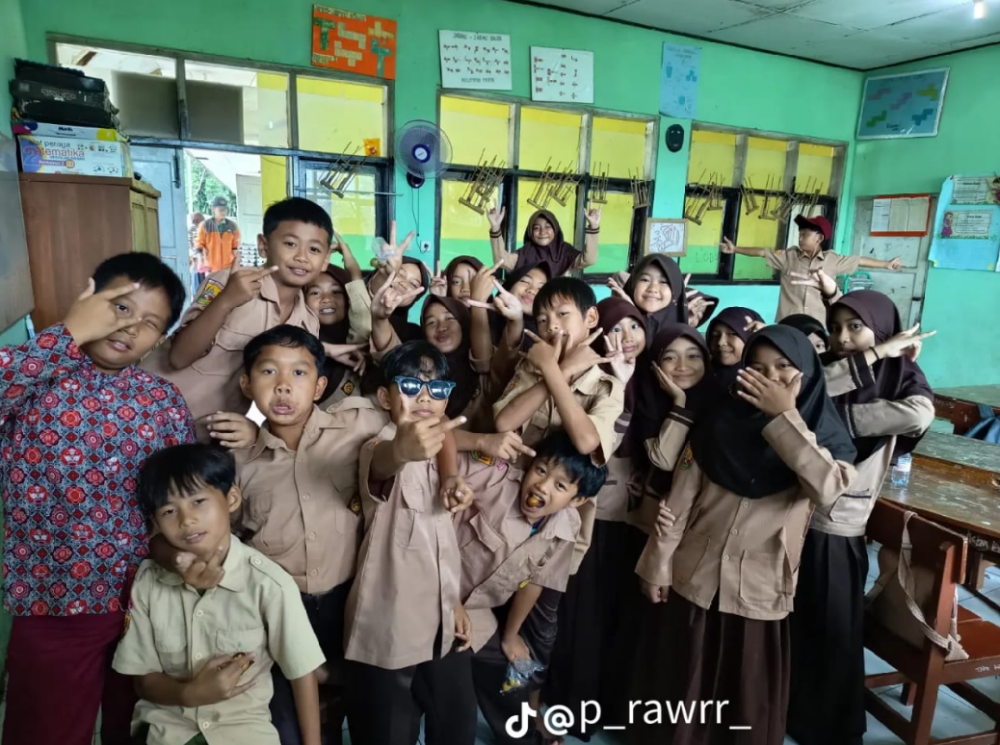

Galeri Foto



| No | Nama | Jenis Kelamin | Umur | Alamat |
|---|---|---|---|---|
| 1 | Alfan Arligo DP | Laki-laki | 11 | Sukabumi |
| 2 | Adzka | Laki-laki | 11 | Sukabumi |
| 3 | Andini Aulia Putri | Perempuan | 11 | Sukabumi |
| 4 | Anggita Aprilia | Perempuan | 11 | Sukabumi |
| 5 | Aqila Izzatunnisa | Perempuan | 11 | Sukabumi |
| 6 | Aqila Jellyta | Perempuan | 11 | Sukabumi |
| 7 | Azril | Laki-laki | 10 | Sukabumi |
| 8 | Dawa Safwan | Laki-laki | 11 | Sukabumi |
| 9 | Dwi Serrirahayu | Perempuan | 11 | Sukabumi |
| 10 | Fitri Nur Hidayah | Perempuan | 11 | Sukabumi |
| 11 | Fatidha Nur Mala Rizki | Perempuan | 11 | Sukabumi |
| 12 | Hilwa | Perempuan | 11 | Sukabumi |
| 13 | Julian Gio Vani | Laki-laki | 11 | Sukabumi |
| 14 | Jihan Siti Najwa | Perempuan | 10 | Sukabumi |
| 15 | Lutfi Hasan | Laki-laki | 11 | Sukabumi |
| 16 | Muhammad Imran | Laki-laki | 11 | Sukabumi |
| 17 | Muhammad Abdul Hilmi Alhadi | Laki-laki | 11 | Sukabumi |
| 18 | Nisa Agustina Firmansyah | Perempuan | 11 | Sukabumi |
| 19 | Naifa Anjani Sakhi Inara | Perempuan | 10 | Sukabumi |
| 20 | Nadia Khairun Anaya | Perempuan | 11 | Sukabumi |
| 21 | Rifki Saputra | Laki-laki | 11 | Sukabumi |
| 22 | Ruhan Arsyii | Laki-laki | 11 | Sukabumi |
| 23 | Repan Assidik | Laki-laki | 11 | Sukabumi |
| 24 | Sabila ? | Perempuan | 10 | Sukabumi |
| 25 | Shah Nizam | Laki-laki | 10 | Sukabumi |
| 26 | Silva Amalia | Perempuan | 11 | Sukabumi |
| 27 | Siti Nabila | Perempuan | 11 | Sukabumi |
| 28 | Sindi Aulia Putri | Perempuan | 11 | Sukabumi |
| 29 | Tia Septiani Utami | Perempuan | 11 | Sukabumi |
| 30 | Veronica Septiani Mariam | Perempuan | 10 | Sukabumi |
| 31 | Aufar Achmad Fauzi | Laki-laki | 11 | Sukabumi |
| 32 | Elsa frozen | Perempuan | 11 | Sukabumi |
| 33 | Imelda Eliana | Perempuan | 10 | Sukabumi |
| Hari | Jam | Mata Pelajaran | Guru |
|---|---|---|---|
| Senin | 07.00 - 09.00 10.00 - 12.00 | Matematika dan B indo | Bu Nia |
| Selasa | 07.00 - 09.00 11.30 - 12.00 | PAI dan IPAS | Pak Ari |
| Rabu | 07.00 - 09.00 11.00 - 12.00 | B indo dan MTK | Bu Nia |
| Kamis | 10.00 - 09.00 10.10 - 12.00 | PPKN dan MTK | Bu Nia |
| Jumat | 07.00 - 09.00 10.30 - 11.20 | Olahraga B Inggris | Pak Aldi |
| Foto | Nama | Jabatan |
|---|---|---|
| putra | Ketua Kelas | |
| Anggita | Wakil Ketua | |
| Nisa | Sekretaris | |
| Naifa | Sekretaris 2 | |
| Silva | Bendahara | |
| izzam | Bendahara 2 | |
| Salwa | Seksi Kebersihan | |
| Aufar | Seksi Keamanan | |
| ? | Seksi Pramuka |
Pilih permainan seru di bawah ini!
Selamat datang di website Kelas 5 SDN Cibodas!
Kami adalah kelompok siswa yang ceria, kreatif, dan suka belajar.
Website ini kami buat sebagai media informasi dan galeri kenangan
kami selama di kelas 5.
Tujuan kami adalah menciptakan lingkungan belajar yang menyenangkan, kreatif, dan saling mendukung antar teman.
makasih yang dah jadi temen gw walaupun kelakuannya agak lain ya, pesen dari gw jangan sering berantem mulu apalagi main jeger jegeran.